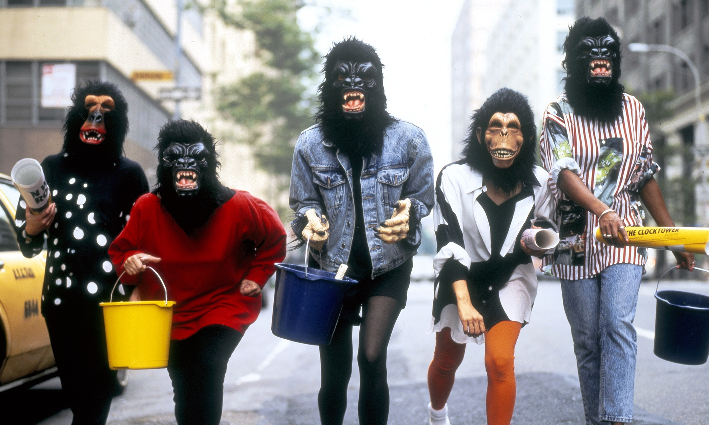

The Guerrilla Girls: 30 years of punking art world sexism
it is 30 years since the Guerrilla Girls
a shifting collective of activists committed
to exposing inequality in the art world – came into being
during which time a lot has changed, and a lot hasn’t.
As they point out in their latest campaign, galleries that once
showed only 10% women artists now show up to 20%. New York
museums that, in 1985, gave no women artists a solo
exhibition – including the Guggenheim, the Metropolitan
and the Whitney – each gave a single woman a solo show last year.